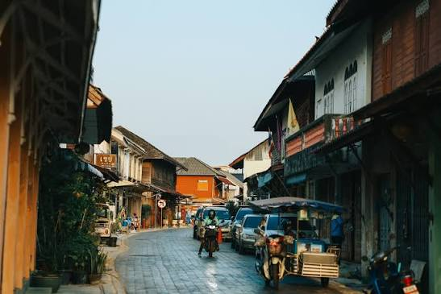
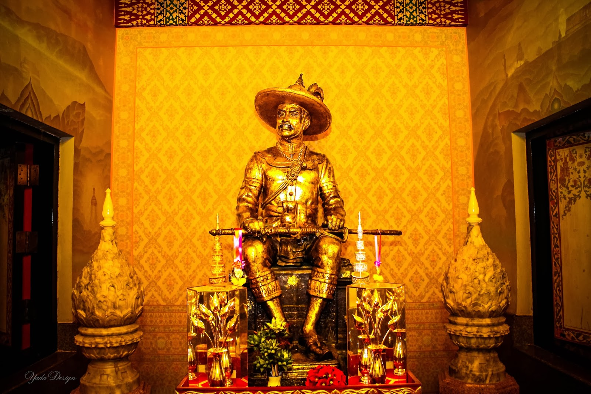
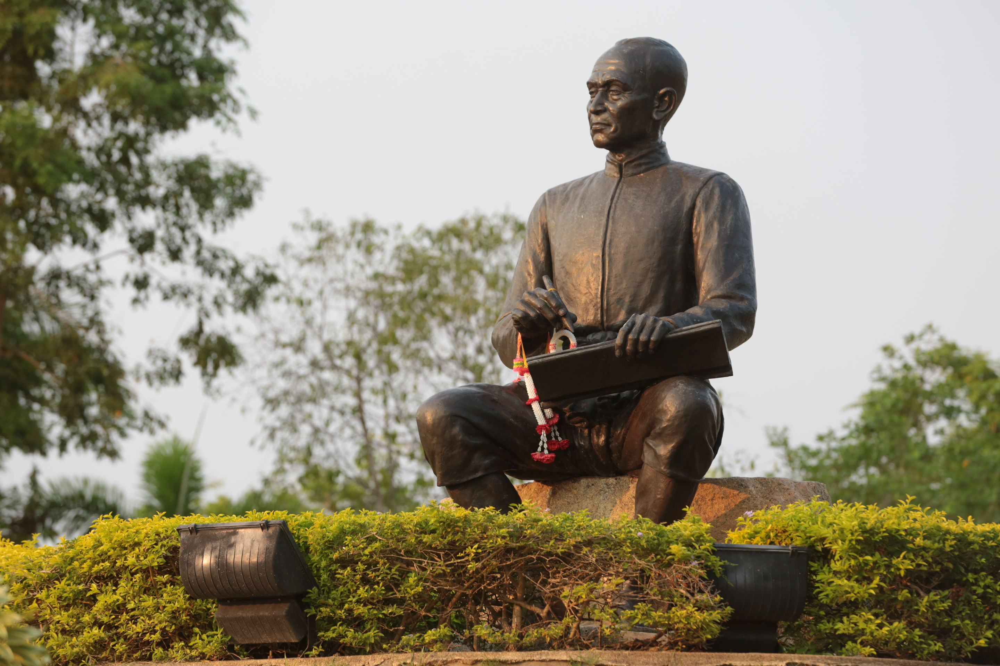

เรือรบหลวงประแส
ร่องรอยแห่งประวัติศาสตร์และความทรงจำ พื้นที่ปากน้ำประแสยังมีสถานที่สำคัญที่ช่วยเชื่อมการท่องเที่ยวกับเรื่องราวทางประวัติศาสตร์ เรือรบหลวงประแสเป็นหนึ่งในจุดที่ผู้มาเยือนสามารถใช้เป็นโอกาสในการเรียนรู้เกี่ยวกับอดีตและความสำคัญของพื้นที่ชายฝั่ง การนำสถานที่ทางประวัติศาสตร์มาอยู่ในเส้นทางเดียวกับชุมชนและธรรมชาติ ช่วยให้ผู้เดินทางได้รับประสบการณ์ที่หลากหลายมากขึ้น เว็บไซต์สามารถนำเสนอหัวข้อนี้ในหมวด “ประวัติศาสตร์” หรือ “เรื่องเล่าปากน้ำประแส” เพื่อช่วยให้ข้อมูลในพื้นที่เชื่อมโยงกันอย่างเป็นระบบ
ถนนยมจินดา

เมืองเก่าที่เล่าเรื่องราวของระยอง ถนนยมจินดาเป็นย่านเมืองเก่าที่สะท้อนบรรยากาศและเรื่องราวของชุมชนในอดีต อาคาร บ้านเรือน ร้านค้า และถนนช่วยสร้างภาพของเมืองระยองในยุคที่แตกต่างจากปัจจุบัน การเดินเที่ยวในย่านเมืองเก่าทำให้ผู้มาเยือนได้เห็นว่าพื้นที่หนึ่งสามารถเก็บความทรงจำของผู้คนไว้ผ่านสิ่งปลูกสร้างและวิถีชีวิต ถนนยมจินดาจึงเป็นสถานที่ที่เหมาะกับผู้ที่สนใจประวัติศาสตร์ วิถีชุมชน และบรรยากาศของเมืองเก่า นักท่องเที่ยวสามารถเดินชมอาคาร พักผ่อนในร้านค้า หรือเรียนรู้เรื่องราวของผู้คนที่เคยใช้ชีวิตอยู่ในพื้นที่ การท่องเที่ยวเชิงวัฒนธรรมแบบนี้ช่วยให้ผู้มาเยือนเข้าใจเมืองในมิติที่ลึกกว่าเพียงการเดินทางไปชมสถานที่ และยังช่วยให้พื้นที่เก่าได้รับการเห็นคุณค่าและได้รับการอนุรักษ์ให้คงอยู่ต่อไป
ศาลสมเด็จพระเจ้าตากสินมหาราช

ย้อนรอยเรื่องราวแห่งประวัติศาสตร์ ระยองเป็นหนึ่งในพื้นที่ที่มีเรื่องราวเกี่ยวข้องกับสมเด็จพระเจ้าตากสินมหาราช ศาลสมเด็จพระเจ้าตากสินมหาราชเป็นสถานที่ที่ผู้คนเดินทางมาสักการะและเรียนรู้เรื่องราวทางประวัติศาสตร์ สถานที่เช่นนี้ช่วยให้ผู้มาเยือนได้เชื่อมโยงสิ่งที่เคยเรียนรู้จากหนังสือกับพื้นที่จริง เมื่อได้เดินทางมายังสถานที่จริง เรื่องราวในอดีตจะมีความชัดเจนขึ้น และทำให้ผู้มาเยือนได้เห็นคุณค่าของประวัติศาสตร์ในฐานะส่วนหนึ่งของตัวตนเมือง การนำเรื่องราวทางประวัติศาสตร์มารวมกับการท่องเที่ยวยังช่วยให้คนรุ่นใหม่สนใจเรียนรู้มากขึ้น เพราะสามารถเห็นและสัมผัสพื้นที่จริงได้
อนุสาวรีย์สุนทรภู่

จากวรรณกรรมสู่การเดินทาง สุนทรภู่เป็นกวีสำคัญของไทยที่มีผลงานเป็นที่รู้จักอย่างกว้างขวาง จังหวัดระยองมีสถานที่ที่เชื่อมโยงกับเรื่องราวของสุนทรภู่ และอนุสาวรีย์สุนทรภู่ในอำเภอแกลงเป็นหนึ่งในสถานที่สำคัญที่ช่วยให้ผู้มาเยือนได้เรียนรู้เรื่องวรรณกรรมผ่านพื้นที่จริง บริเวณอนุสาวรีย์มีการนำตัวละครจากวรรณคดีมาเป็นองค์ประกอบ ทำให้ผู้มาเยือนสามารถเชื่อมโยงภาพที่เห็นกับเรื่องราวจากบทประพันธ์ การท่องเที่ยวในลักษณะนี้ช่วยให้วรรณกรรมไม่อยู่เพียงในหนังสือ แต่สามารถกลายเป็นประสบการณ์ที่ผู้เดินทางสัมผัสได้ เด็กและเยาวชนที่มาเยือนอาจเกิดความสนใจในการอ่านหรือค้นคว้าเรื่องราวของสุนทรภู่เพิ่มเติม จึงกล่าวได้ว่าการท่องเที่ยวเชิงวรรณกรรมสามารถเชื่อมโลกของการศึกษาเข้ากับการเดินทางได้อย่างสร้างสรรค์
back